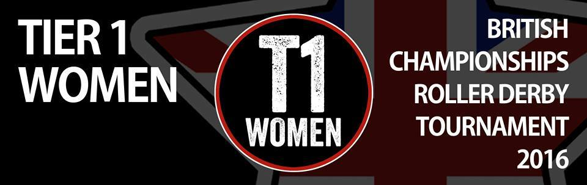

British Champs 2016 opens for Scotland
While the second year of the nationwide British Championships started last week, a quirk of scheduling means that all of Scotland's teams have their first games this weekend.
In fact, there are no less than three double-header events for British Champs this weekend featuring Scottish teams, and two of them are being hosted up in Scotland itself.
With Auld Reekie Roller Girls, Voodoo Roller Dollies and New Town Roller Girls all having left British Champs for various reasons after the 2015 Season, there are currently 4 Scottish leagues still competing in the schedules, all of whom play this weekend.
Working up the tiers, then:
This Saturday, Aberdeen's Granite City Roller Derby are hosting the first fixture of the Tier 4 North Division, in their usual venue, the Beach Leisure Centre. The double header will see Blackpool Roller Derby League take on Halifax Bruising Banditas; followed by hosts Granite City taking on Durham Roller Derby.

FlatTrackStats predicts a win for GCRD over Durham; however, the Halifax/Blackpool bout should be extremely close, potentially coming down to the final jam.
GCRD are hosting at the Beach Leisure Centre. Doors open at 12:30pm.
Down in Preston, both Dundee Roller Girls and Fierce Valley Roller Girls will be competing in the first fixture in T3 North on Saturday. FVRG will lead the schedule, taking on Hull's Angels Roller Dames; Dundee Roller Girls follow, taking on hosts Preston Roller Girls.
FTS's predictions here are that H.A.R.D. should triumph over Fierce Valley, while hosts Preston should lose, albeit narrowly, against Dundee.

This event will be held in Preston's usual venue, Preston's College. Doors open at midday.
Finally, Glasgow Roller Derby will be hosting the first games of the T1 "Premier" Division, on Sunday! While Glasgow won the T1 Division last year, they're also one of the few teams from T1 returning from the last time: this first fixture sees them facing Newcastle Roller Girls (who promoted from T2 last year) and also facing London Rollergirls B, who are new to the Championships. Glasgow will be keen to prove that they're capable of defending their title against new challengers, while Newcastle will be equally keen to show that they deserve their promotion from Tier 2, and the Brawl Saints will want to make their mark as incomers.

Looking to FlatTrackStats, it expects Glasgow to take an easy win against Newcastle, but a more challenging one against London's Brawl Saints. With the London bout second, it could be even closer than FTS expects; the statistics don't take into account the possibility that one team might be more tired after playing previously.
Glasgow are hosting this event at their regular venue, the ARC Health and Fitness at Glasgow Caledonian University. Doors open at 12:45pm.